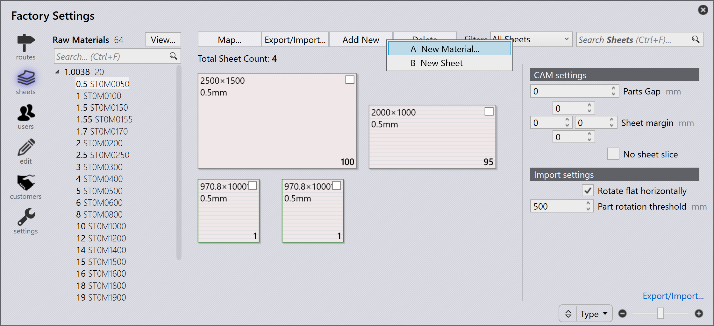

Add new material and sheet
Levyjen hallintaan pääsee napsauttamalla Factory -kuvaketta ja valitsemalla sheets. Tämä tarjoaa yleiskatsauksen määritetyistä materiaaleista. Kun valitset minkä tahansa vasemmalla luetellun materiaalin, näytetään käytettävissä olevat levyt, paksuudet, koot ja määrät.
Lisätäksesi uuden materiaalin napsauta Add new → New Material… sheets -sivulta kohdassa factory.

Syötä Material, Raw Material, Thickness ja materiaalin parametrit. Napsauta OK.

View material
View… -vaihtoehdossa kohdassa factory → Sheets on seuraavat vaihtoehdot:
-
Expand All: Laajentaa kaikki materiaaliluokat.
-
Collapse All: Tiivistää kaikki materiaaliluokat.
-
Show All Materials: Luettelee kaikki raakamateriaalit levyvarastosta riippumatta.
-
Show Inventory Materials: Luettelee vain ne raakamateriaalit, joilla on levyvarastoa.
| Lihavoituna näytetty raakamateriaalin paksuus edustaa levyn saatavuutta. |
Add sheet
Lisätäksesi uuden levyn napsauta Add new → New Sheet Sheets-sivulta kohdassa factory. Muokkaa levyn parametreja.


-
Search Sheets (Ctrl + F)…: Suodattaa levyt koon, valssaussuunnan, kommenttien, sulatusnumeron, jäännöslevyn ja höyrystyksen perusteella.
-
Slider (+ / –): Säätää levyn esikatselun zoomaustasoa.
-
Filter by: Ohjaa levyn esikatselua valitun vaihtoehdon perusteella (Width, Height, Area, Quantity, Grain tai Type).
|
Materiaalin tai levyn muokkaaminen tai poistaminen voidaan tehdä vain ennen kuin osa on kohdennettu kyseiseen materiaaliin tai sijoittelu on nestattu kyseiselle levylle. Materiaalin nimeä ei voi tässä vaiheessa muuttaa. Sen vuoksi on luotava uusi materiaali. |